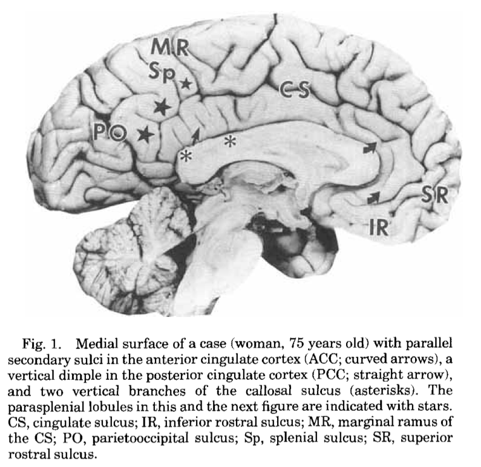
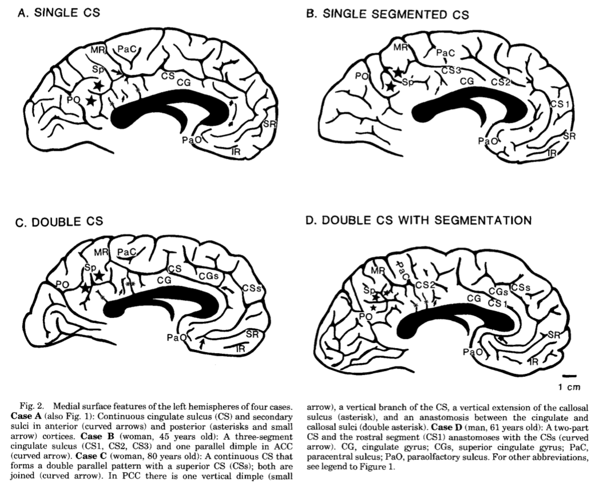
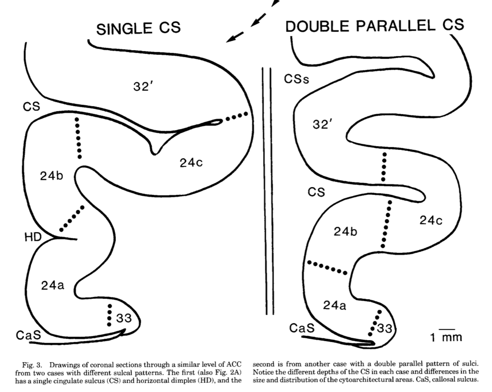
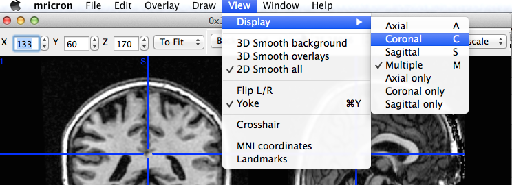
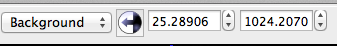
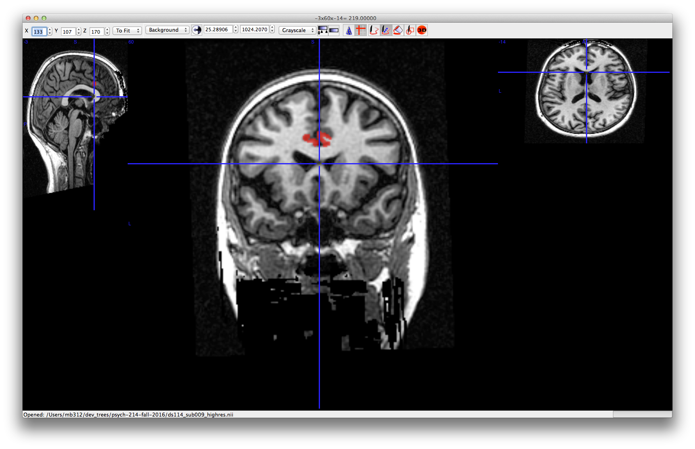
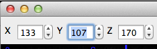
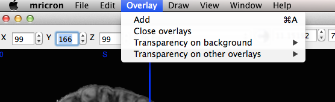

\(\newcommand{L}[1]{\| #1 \|}\newcommand{VL}[1]{\L{ \vec{#1} }}\newcommand{R}[1]{\operatorname{Re}\,(#1)}\newcommand{I}[1]{\operatorname{Im}\, (#1)}\)
Anterior cingulate¶
See: [VNVH95].
Most brain hemispheres (65%) have a single cingulate sulcus delimited by a cingulate sulcus above it:
The rest have two cingulate sulci, with an extra superior cingulate sulcus and superior cingulate gyrus:
The cytoarchitectonic regions appear to correspond to the sulcal anatomy:
Match brain to template in high resolution¶
We are going to run the dipy non-linear registration to match a high-resolution structural image to a high-resolution version of the template.
Then we’re going to see what kind of job this does of matching anterior cingulate anatomy to the template.
make sure you have these files in your working directory:
have a look at
dipy_registration.pyfor useful functions;open IPython and:
In [1]: run dipy_registration.py In [2]: mapping = register_save('mni_icbm152_t1_tal_nlin_asym_09a.nii', ...: 'mni_icbm152_t1_tal_nlin_asym_09a_mask.nii', ...: 'ds114_sub009_highres.nii', ...: 'ds114_sub009_highres_brain_mask.nii')
leave that running - it will take something like 10-20 minutes depending on your machine. Meanwhile...
Reviewing anatomy¶
We will be using MRIcron:
review the help on how to draw with MRIcron.
open
ds114_sub009_highres.niiwith MRIcron. Scroll around the image, and have a look at the controls and menu items;use the “View” menu “Display” option to switch to a display with larger versions of coronal, or axial or sagittal slices:
what kind of cingulate anatomy (single, double) does this subject have in each hemisphere? The sagittal slices might be most useful for that question;
make a new MRIcron window and open
mni_icbm152_t1_tal_nlin_asym_09a.nii. You might want to play with the upper and lower image display thresholds to get good contrast in the image:on a piece of paper, write down what you would like the registration to do to the subject’s brain:
- sketch the sulcal anatomy of the medial surface of each hemisphere for the subject and the template, as in the Vogt figure above;
- do the same for the template image;
- draw arrows from the subject hemisphere to the matching part of the template;
in MRIcron, use the “View, Display” to go to the coronal sections of the individual subject brain image;
find a coronal slice a little posterior to the genu of corpus callosum to start drawing:
Have a look at draw with mricron for the drawing actions you will need using the keyboard and mouse.
using the diagram from the Vogt paper, draw your estimate for the position for left and right area 24 (a, b, c combined) on five adjacent slices through the anterior cingulate. Click on the lower arrow of the y slice index at the top left to make sure you are moving in a posterior direction, one slice at a time:
when you’ve finished drawing, use the y slice index arrow buttons to scroll through the image one slice at a time to make sure you haven’t missed any slices, and you have drawn what you meant to;
using the “Draw” menu in MRICron; “Save VOI” to save this definition in MRIcron’s own format. Add something like
_area_24to the VOI name when saving;using the Draw menu “Convert” item, convert the VOI to a NIfTI file;
if the registration has finished, open the new
w_ds114_sub002_highres.niifile in MRIcron. Compare it to the template, visually. What do you think of the match? How does it correspond to your drawing?try loading the template image, and using the warped individual brain as an overlay:
Play with the overlay settings to get an idea of the quality of the registration;
investigate the
dipy_registration.pycode for a useful function to resample the region definition file to the template voxel space. Apply this function (or your own, if you prefer) to your region definition, to write out a version of the region image in template space;use the “Overlay” menu to load the resampled region on the:
- template image;
- resampled (warped) individual image;
What do you think of the registration? How does it compare to your drawing? Do you think the cytoarchitecture lines up with where you think it should be, given your drawing and the anatomy of the template and the individual subject image?